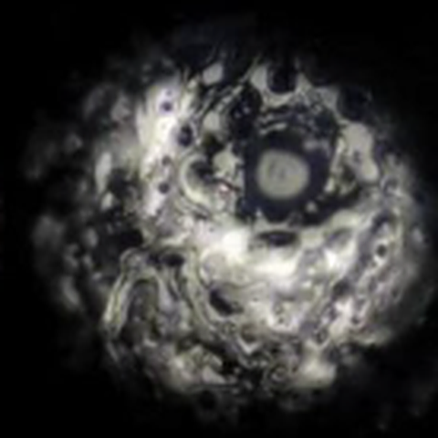

WASSERSTRUKTUR
Kangenwasser ist geordnet
Kangenwasser
sechseckig wie eine Schneeflocke

Leitungswasser
ungeordnet
ANSCHLUSS
Der Weg des Wassers
Wasserhahn
LeveLuk K8
Basisches Trinkwasser
oben
Saures Abwasser
unten
IM INNEREN DER MASCHINE
Erst filtern, dann ionisieren
1
2
3
Filter, dreistufig
Hauptbestandteil Aktivkohle
filtert z. B. Mikroplastik, Medikamentenrückstände, Hormone, Spritzmittel
8 Titanplatten
mit Platin beschichtet
Dabei entsteht
basisches Wasser
hexagonale Struktur
molekularer Wasserstoff
pH-WERT, 7 IST NEUTRAL
Kangenwasser ist basisch
ca. 4,5
Abwasser
7 bis 8
Leitungswasser
9,5
Kangenwasser
← ca. 1,5
Magen
sauer
Sprudelwasser
7,35
Blut
ca. 8,5
Flaschenwasser
ZELLSPANNUNG IN MILLIVOLT
Gesunde Zellen sind im Minus
DIE ZELLE
-70 mV
junge, gesunde Zelle
-50 mV
gealterte Zelle
-15 mV
Tumorzelle
0 mV
Zelle tot
WAS WIR TRINKEN
+100 bis +300 mV
Flaschen- und Leitungswasser
leicht im Minus
Vitamin C, grüner Tee, gute Öle
über -600 mV
Kangenwasser, gemessen
DIE TASTEN
Sieben Wassertypen
9,5
Trinken
jeden Tag
9,0
Kochen
8,5
Kaffee und Tee
7,5 bis 8
Neutral
Babynahrung, Medikamente
6,0
Schönheitswasser
Haut und Haare
2,5
Stark sauer
unterer, kurzer Schlauch
11,5
Stark basisch
oberer, langer Schlauch
OBST UND GEMÜSE EINLEGEN
11,5 löst Spritzmittel
Leitungswasser
Spritzmittel und Wachs
bleiben auf der Schale
pH 11,5
löst Spritzmittel auf Öl- und Fettbasis
und die Wachsschicht
IM ÜBERBLICK
Sechs Eigenschaften
1
basisch
2
hexagonal
3
molekularer
Wasserstoff
4
Filterung
5
Mikroclusterung
6
Mineralien
ANTIOXIDANTIEN IN KANGENWASSER
1,5 Liter entsprechen etwa
40
Karotten
2 kg
Heidelbeeren
70
Bananen